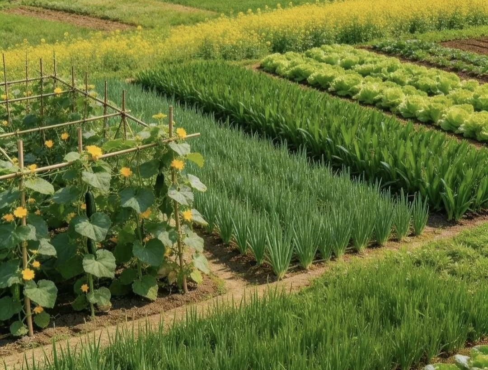
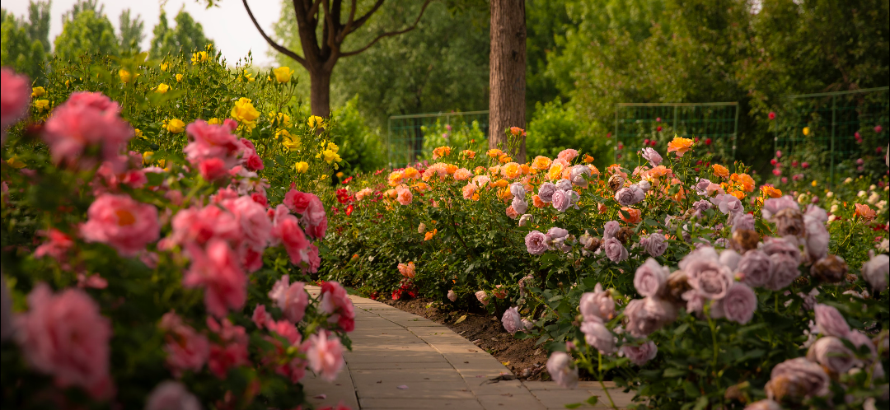
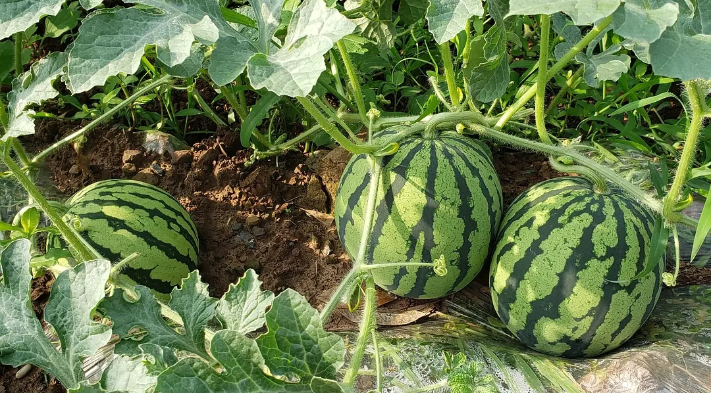
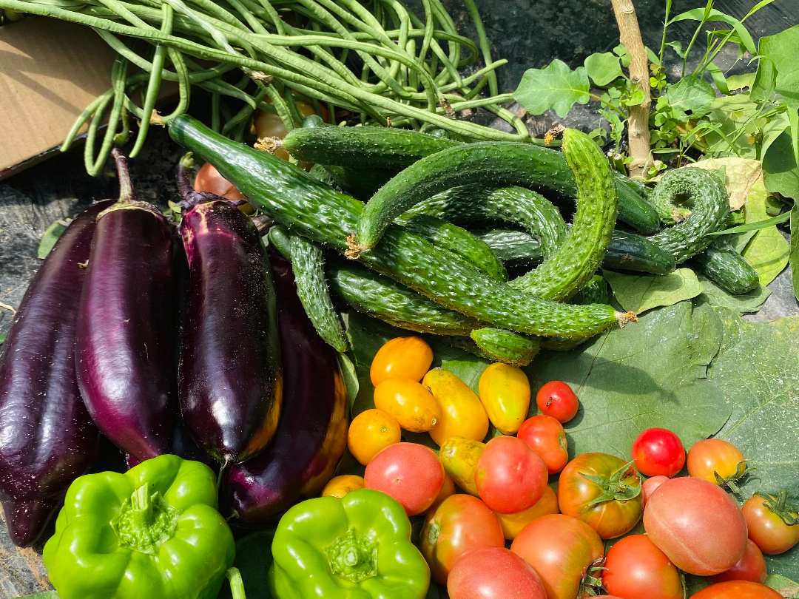
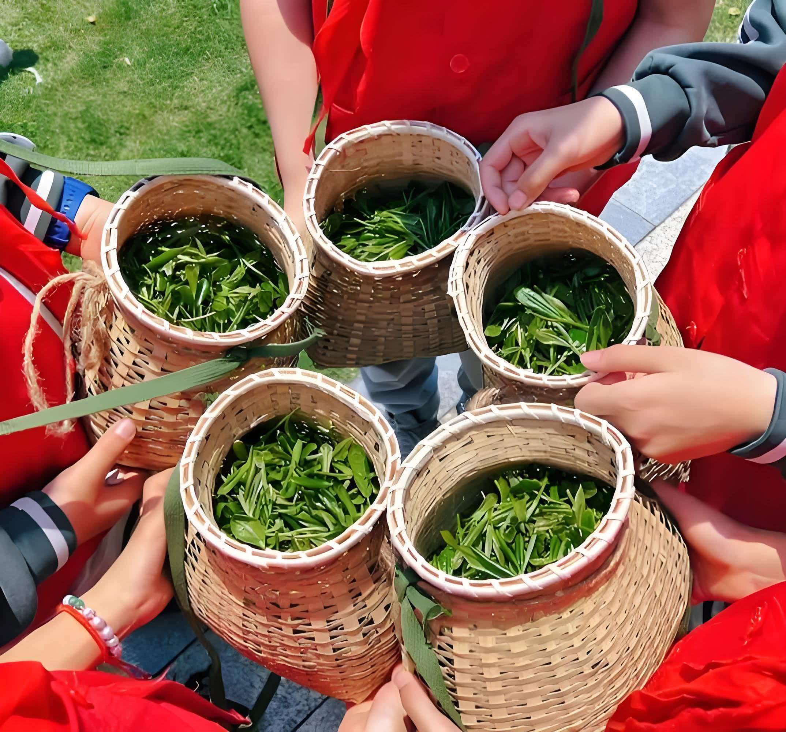
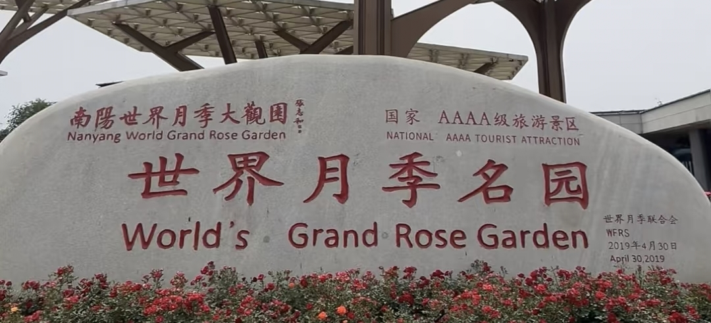

01
自然资源
展示当地地形、气候、水土与农业生产环境，帮助理解特色产品形成的自然背景。
从南阳的特色农田、果园、月季基地与传统农耕生活出发， 记录地方产业、乡村风貌与乡土故事，让农产品背后的土地、 技艺与人被更多人看见。
走进南阳乡村 ↓南阳地处河南西南部，拥有平原、丘陵与山地等多样地貌。 不同地域形成了各具特色的农业资源，也孕育出猕猴桃、香菇、 辛夷、月季、茶叶等特色产业。乡味智链通过数字化整理产地与 产品信息，帮助浏览者了解每一种好物背后的地方特色。
展示当地地形、气候、水土与农业生产环境，帮助理解特色产品形成的自然背景。
记录当地传统农事、节庆习俗、特色饮食与生产经验，呈现乡村文化的独特价值。
把农产品、生产主体与产地故事进行关联展示，为乡村品牌宣传和产业推介提供信息基础。
用影像记录南阳土地、作物与乡村生活。





以信息整理和数字化展示为基础，构建从产地信息到品牌传播、从产品介绍到采购意向收集的服务流程。
收集经核实的产地、产品类型、生产方式和相关介绍。
将分散的产品资料整理为结构清晰、便于浏览的网页档案。
通过图文展示讲述产品特点与乡土故事，提升信息可见度。
收集潜在采购需求，帮助农户后续联系和了解市场反馈。

一朵月季的产业故事：从育苗、种植到花卉销售， 讲述南阳月季特色产业如何连接农户与市场。南阳市政府资料显示， 月季苗木繁育、花卉深加工与文化旅游之间形成了紧密联系。
一枚猕猴桃的产地故事：从果园管理、采收到分选包装， 展示西峡猕猴桃背后的生产流程。品种、产地、成熟季节与供应主体 共同构成了一份完整的数字档案。
一份香菇的加工故事：展示鲜品、干品等不同形态， 以及加工、储存和运输对产品展示的影响。西峡香菇从采收分选到 干鲜加工，体现了南阳菌菇产业的完整链条。
乡村振兴项目不仅要有技术实现，也应当体现对实际场景的理解。 以下三类资料可作为团队完善参赛作品的重点。
记录实际村庄、特色产业、产品种类和生产主体。资料来源与统计时间应明确。
了解农户在线宣传、品牌介绍和采购沟通中遇到的问题。访谈前征得对方同意。
记录产品页面访问、测试意向提交和后台读取情况。区分真实调研数据与模拟测试数据。
无论您是特色农产品生产者、合作社、加工企业，还是采购需求方，
都可以通过平台了解产品信息、提交合作意向。